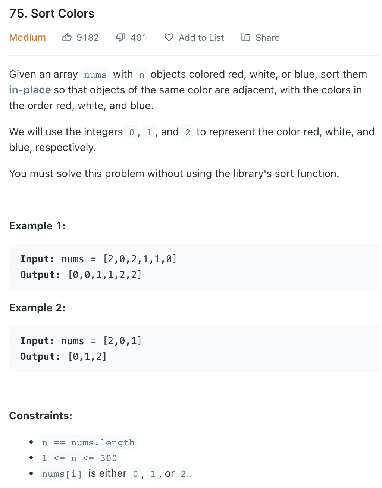

75. Sort Colors
Question

先自己想想看 🤔Try it yourself first 🤔
✍🏽 My Solution #1 - Two Pass O(1) space
Runtime: 1 ms, faster than 42.82% of Java online submissions for Sort Colors. Memory Usage: 42.6 MB, less than 38.58% of Java online submissions for Sort Colors.
class Solution {
public void sortColors(int[] nums) {
int zero = 0;
int one = 0;
int two = 0;
for (int num : nums) {
if (num == 0) {
zero++;
} else if (num == 1) {
one++;
} else {
two++;
}
}
for (int i = 0; i < nums.length; i++) {
if (zero != 0) {
nums[i] = 0;
zero--;
} else if (one != 0) {
nums[i] = 1;
one--;
} else if (two != 0) {
nums[i] = 2;
two--;
}
}
}
}
🧠 Thought Process
- Why did I choose this particular implementation?
- 有點取巧，分別計算0、1、2的數量，再將其放置回數組
- What is the time/space complexity of my solution? How do I know?
- time: O(n)
- space: O(1)
✍🏽 My Solution #2 - quick sort
Runtime: 0 ms, faster than 100.00% of Java online submissions for Sort Colors. Memory Usage: 41.5 MB, less than 75.47% of Java online submissions for Sort Colors.
class Solution {
public void sortColors(int[] nums) {
int n = nums.length;
if (n == 1) return;
quickSort(nums, 0, n-1);
}
private void quickSort(int[] nums, int p, int r) {
if (p > r) return; // 終止條件
int q = partition(nums, p, r);
quickSort(nums, p, q-1);
quickSort(nums, q+1, r);
}
private int partition(int[] nums, int p, int r) {
int i = p-1;
for (int j = p; j < r; j++) {
if (nums[j] < nums[r]) {
swap(nums, i+1, j);
i++;
}
}
swap(nums, i+1, r);
return i+1;
}
private void swap(int[] nums, int a, int b) {
int tmp = nums[a];
nums[a] = nums[b];
nums[b] = tmp;
}
}
🧠 Thought Process
- Why did I choose this particular implementation?
- 單純實現排序算法，選擇快速排序
- What is the time/space complexity of my solution? How do I know?
- time: O(n logn)
- space: O(log n)
- What mistakes did I make?
- 忘記快排的寫法...偷看了題解
Solution #1 [Two Pointer one pass]
Runtime: 0 ms, faster than 100.00% of Java online submissions for Sort Colors.
Memory Usage: 42.4 MB, less than 55.69% of Java online submissions for Sort Colors.
class Solution {
public void sortColors(int[] nums) {
int lastZero = -1;
int firstTwo = nums.length;
int cur = 0;
while (cur < firstTwo) {
if (nums[cur] == 0) {
swap(nums, cur, lastZero + 1);
lastZero++;
cur++;
} else if (nums[cur] == 1) {
cur++;
} else if (nums[cur] == 2) {
swap(nums, cur, firstTwo - 1);
firstTwo--;
}
}
}
private void swap(int[] nums, int i, int j) {
int tmp = nums[i];
nums[i] = nums[j];
nums[j] = tmp;
}
}
Explanation (in my words)
- What is the space/time complexity of their solution?
- time: O(n)
- space: O(1)
Solution #2 [王爭-雙指針]
Runtime: 1 ms, faster than 34.95% of Java online submissions for Sort Colors.
Memory Usage: 42.7 MB, less than 34.21% of Java online submissions for Sort Colors.
class Solution {
public void sortColors(int[] nums) {
int n = nums.length;
int i = 0;
int j = n-1;
while (i < j) {
if (nums[i] != 2) {
i++;
continue;
}
if (nums[j] == 2) {
j--;
continue;
}
swap(nums, i, j);
i++;
j--;
}
int p = 0;
int q = i;
if (nums[q] == 2) q--;
while (p < q) {
if (nums[p] == 0) {
p++;
continue;
}
if (nums[q] == 1) {
q--;
continue;
}
swap(nums, p, q);
p++;
q--;
}
}
private void swap(int[] nums, int i, int j) {
int tmp = nums[i];
nums[i] = nums[j];
nums[j] = tmp;
}
}
Explanation (in my words)
- How does their solution work?
- 先分類2跟不是2的
- 之後再排序0跟1
Solution #3 [統計]
Runtime: 0 ms, faster than 100.00% of Java online submissions for Sort Colors. Memory Usage: 40.6 MB, less than 87.89% of Java online submissions for Sort Colors.
public void sortColors(int[] nums) {
int zero_count = 0;
int one_count = 0;
for (int i = 0; i < nums.length; i++) {
if (nums[i] == 0) {
zero_count++;
}
if (nums[i] == 1) {
one_count++;
}
}
for (int i = 0; i < nums.length; i++) {
if (zero_count > 0) {
nums[i] = 0;
zero_count--;
} else if (one_count > 0) {
nums[i] = 1;
one_count--;
} else {
nums[i] = 2;
}
}
}
Explanation (in my words)
- How does their solution work?
- 遍历一次数组，统计 0 出现的次数，1 出现的次数，2 出现的次数，然后再遍历数组，根据次数，把数组的元素改成相应的值。当然我们只需要记录 0 的次数，和 1 的次数，剩下的就是 2 的次数了。
- What is the space/time complexity of their solution?
- time: O(n)
- space: O(1)